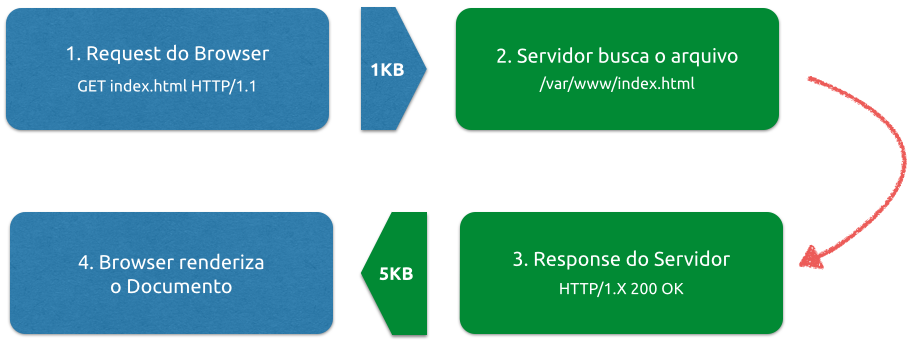

O que é o protocolo HTTP? Para que serve? Em que momento eu estou utilizando?

Métodos HTTP
Na versão 1.1 do protocolo HTTP (que é a que todos usamos atualmente) temos 9 verbos diferentes, porem vamos dar uma breve explanação nos principais:
GET: essa é a requisição mais comum de todas. Através dessa requisição nós pedimos a representação de um recurso: que pode ser um arquivo html, xml, json, etc.
POST: o método POST é utilizado quando queremos criar um recurso. Quando usamos POST, os dados vão no corpo da requisição e não na URI.
PUT: requisita que um recurso seja "guardado" na URI fornecida. Se o recurso já existir, ele deve ser atualizado. Se não existir, pode ser criado.